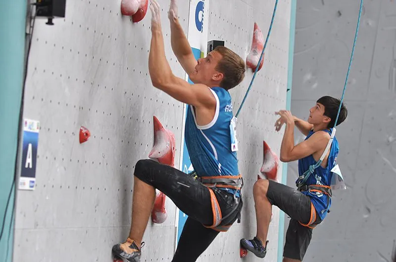

Arrampicata Sportiva
Sport olimpico dal 2020
Svolgimento Gara:
Tipologie:
- Arrampicata Lead:
- Arrampicata Boulder:
- Arrampicata Speed:
In questa disciplina gli atleti arrampicano sui tracciati predisposti (vie) che si sviluppano in altezza, moschettonando i punti di protezione; il punto più alto raggiunto determina il posizionamento del concorrente in classifica . Ad ogni presa viene assegnato un punteggio progressivo e ha 2 valori: “caricata” se viene impugnata; “utilizzata” se dopo averla impugnata si inizia un movimento che però non permette di raggiungere la presa successiva. Il massimo punteggio si ha nell’arrivare con entrambe le mani all’ultima presa: il “top”.
La competizione si svolge in tracciati brevi sui quali gli atleti si arrampicano senza corda o imbragatura. Vi sono dei materassi a protezione delle cadute, posti alla base della struttura per garantire la sicurezza degli atleti. Richiede uno sforzo di breve durata ma di massima intensità. Bisogna partire con tutti e 4 gli arti appoggiati su prese obbligate di “start” per completare il percorso che culmina con un “top” (presa finale) che dev’essere tenuto dall’atleta per almeno 3 secondi consecutivi. Per stabilire il punteggio vengono contati il numero di tentativi impiegati nel raggiungere il “top” in un determinato tempo che è, in genere, di 4 o 5 minuti. Si ha, inoltre, una presa intermedia chiamata “zona” (o “bonus”) che attribuisce un ulteriore punteggio, sempre a seconda del numero di tentativi impiegati per raggiungerla.
Gli atleti arrampicano con la corda dall’alto su tracciati opportunamente preparati (record format o classic format). La competizione consiste nel completare una via (normalmente di grado medio/basso) nel minor tempo possibile. Il tempo di salita determina il posizionamento di un concorrente in classifica. Dal 2007 la IFSC ha omologato un muro di arrampicata di 10 m o 15 m dove effettuare le competizioni.
Gli atleti sostengono in successione tre prove nelle specialità (lead, speed, boulder) sopra descritte. La classifica si ottiene dall’inverso del prodotto dei risultati delle tre specialità (minore è il risultato del prodotto, migliore è il piazzamento).
Le nazioni vincitrici nelle olimpiadi del 2020 sono state:
- Nella disciplina maschile la nazione vincitrice e' stata la spagna con l'atleta Alberto Gines Lopez
- Nella disciplina femminile la nazione vincitrice e' stata la slovenia con l'atleta Janja Garnbret
Nelle seguenti immagini e' visibile la vincitrice della medaglia d'oro Janja Garnbret: